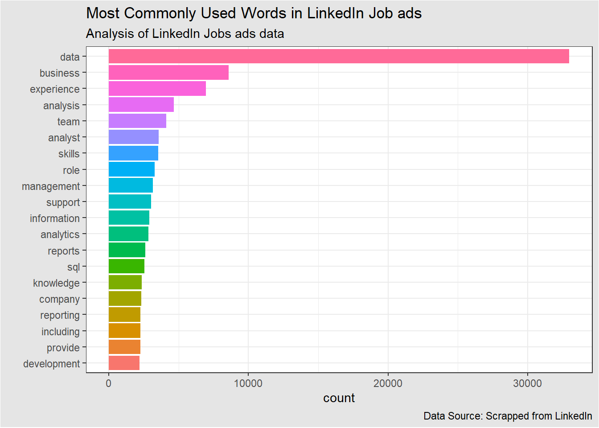
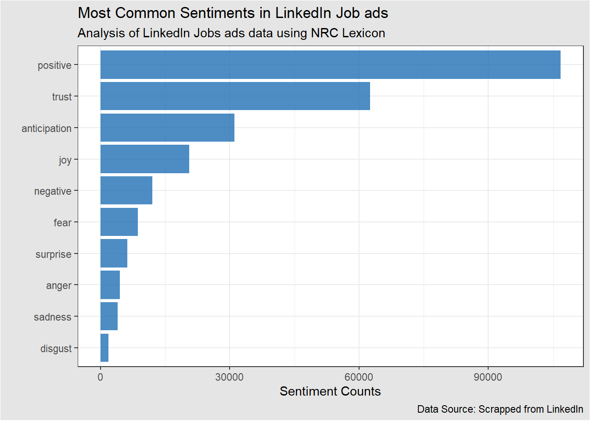
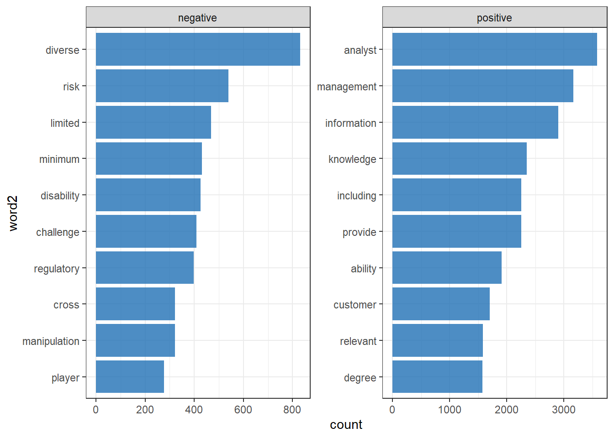
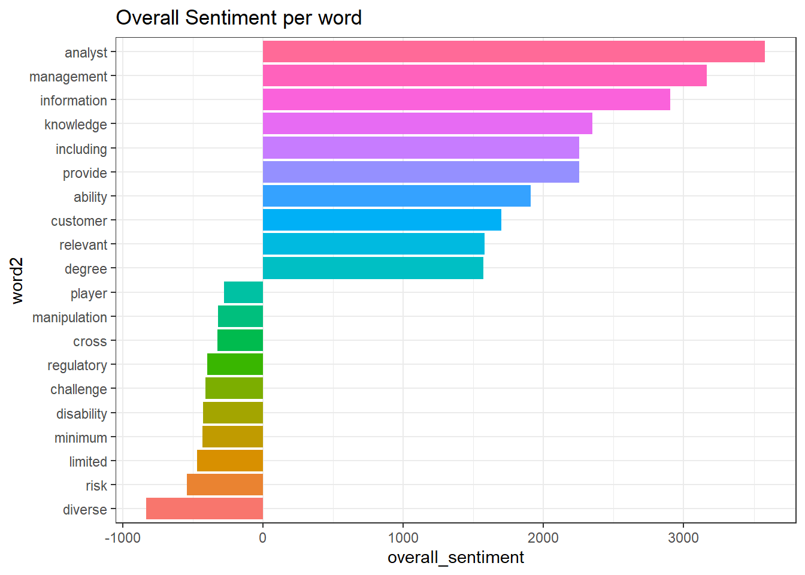
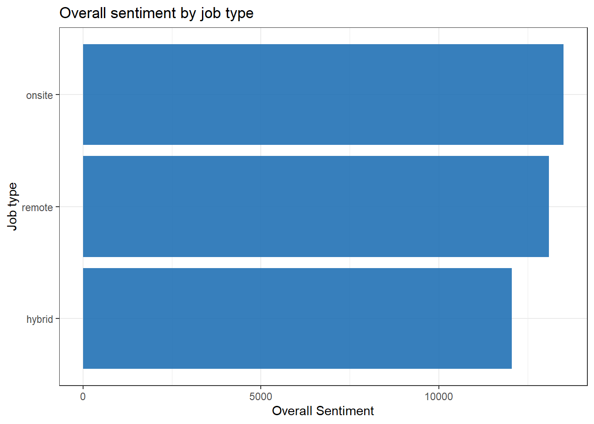
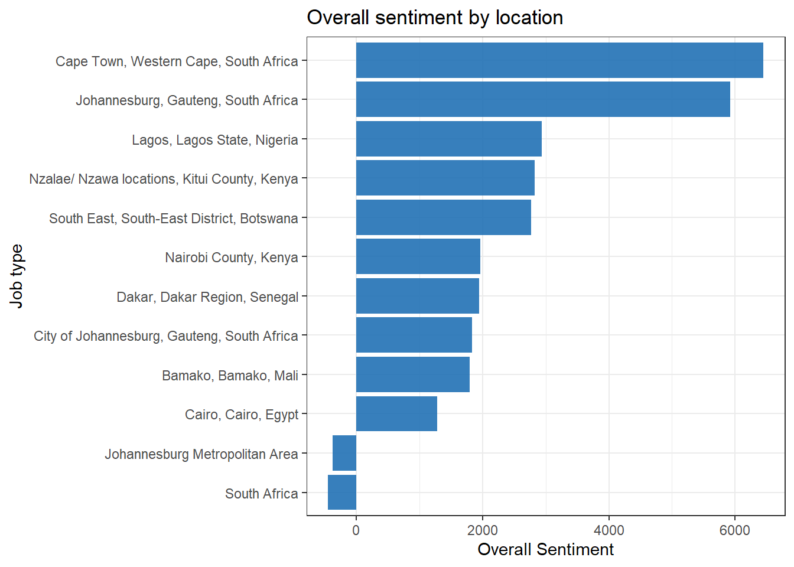

# load packages
pacman::p_load(tidyverse, tidytext)
# read data
jobs <- read_csv("datasets/linkedin_jobs_africa.csv", show_col_types = F)
# some data cleaning
jobs %>%
# clean variable names
janitor::clean_names() %>%
# select variables of interest
select(-c(salary, criteria, link)) %>%
# unnest description
unnest_tokens(word, description) %>%
# remove stop words
anti_join(stop_words, by = "word") ->
# assign output to jobs tidy
jobs_tidy
# count the most common words in the descriptions and visualize
jobs_tidy %>%
count(word, sort = T, name = "count") %>%
# choose top 20 words
slice_head(n = 20) %>%
# order word by counts
mutate(word = fct_reorder(word, count)) %>%
# create bar plot
ggplot(aes(word, count, fill = as.factor(word)))+
geom_col(show.legend = F)+
scale_color_viridis_d(option = "turbo")+
coord_flip()+
theme_bw()+
labs(
title = "Most Commonly Used Words in LinkedIn Job ads",
subtitle = "Analysis of LinkedIn Jobs ads data",
x = "",
caption = "Data Source: Scrapped from LinkedIn"
)+
theme(
plot.background = element_rect(fill = "gray90")
)
# append nrc sentiment dictionary, count and visualize
jobs_tidy %>%
inner_join(get_sentiments("nrc"), by = "word") %>%
count(sentiment, sort = T, name = "sentiment_counts") %>%
ggplot(
aes(
x = fct_reorder(sentiment, sentiment_counts),
y = sentiment_counts
)
)+
geom_col(show.legend = F, fill = "#2171B5", alpha = .8)+
coord_flip()+
theme_bw()+
labs(
title = "Most Common Sentiments in LinkedIn Job ads",
subtitle = "Analysis of LinkedIn Jobs ads data using NRC Lexicon",
x = "",
y = "Sentiment Counts",
caption = "Data Source: Scrapped from LinkedIn"
)+
theme(
plot.background = element_rect(fill = "gray90")
)
# count by word and sentiment
jobs_tidy %>%
inner_join(get_sentiments("nrc"), by = "word") %>%
count(word, sentiment, name = "count") %>%
# filter for positive and negative sentiments
filter(sentiment %in% c("positive", "negative")) %>%
group_by(sentiment) %>%
top_n(10, count) %>%
ungroup() %>%
mutate(word2 = fct_reorder(word, count)) %>%
ggplot(
aes(
word2, count, fill = as.factor(word2)
)
)+
geom_col(show.legend = F, fill = "#2171B5", alpha = .8)+
coord_flip()+
facet_wrap(~sentiment, scales = "free")+
theme_bw()
# overall sentiment
# count by word and sentiment
jobs_tidy %>%
inner_join(get_sentiments("nrc"), by = "word") %>%
count(word, sentiment, name = "count") %>%
filter(sentiment %in% c("positive", "negative")) %>%
group_by(sentiment) %>%
top_n(10, count) %>%
ungroup() %>%
pivot_wider(names_from = sentiment, values_from = count) %>%
replace_na(list(positive = 0, negative = 0)) %>%
mutate(
overall_sentiment = positive - negative,
word2 = fct_reorder(word, overall_sentiment)
) %>%
ggplot(
aes(
word2, overall_sentiment, fill = as.factor(word2)
)
)+
geom_col(show.legend = F)+coord_flip() + theme_bw()+
ggtitle("Overall Sentiment per word")
# sentiment by job type(onsite_remote)
jobs_tidy %>%
inner_join(get_sentiments("bing"), by = "word") %>%
count(onsite_remote, sentiment, name = "count") %>%
pivot_wider(names_from = sentiment, values_from = count) %>%
mutate(
overall_sentiment = positive - negative,
onsite_remote = fct_reorder(onsite_remote, overall_sentiment)
) %>%
ggplot(
aes(
onsite_remote, overall_sentiment
)
)+
geom_col(show.legend = F, fill = "#2171B5", alpha = .9)+
coord_flip()+
labs(
x = "Job type",
y = "Overall Sentiment",
title = "Overall sentiment by job type"
)+ theme_bw()
# job location
jobs_tidy %>%
inner_join(get_sentiments("bing"), by = "word") %>%
count(location, sentiment, name = "count") %>%
group_by(sentiment) %>%
top_n(10, count) %>%
ungroup() %>%
pivot_wider(names_from = sentiment, values_from = count) %>%
replace_na(list(positive = 0, negative = 0)) %>%
mutate(
overall_sentiment = positive - negative,
location = fct_reorder(location, overall_sentiment)
) %>%
ggplot(
aes(
location, overall_sentiment
)
)+
geom_col(show.legend = F, fill = "#2171B5", alpha = .9)+
coord_flip()+
labs(
x = "Job type",
y = "Overall Sentiment",
title = "Overall sentiment by location"
)+ theme_bw()